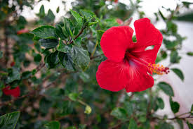

Hibiscus (Hibiscus rosa-sinensis)
Scientific Name: Hibiscus rosa-sinensis
Description: Hibiscus is a vibrant flowering plant that produces large, colorful blooms. It is commonly found in tropical and subtropical climates and is known for its ornamental beauty. The flowers come in a variety of colors, including red, yellow, and pink, and are used in teas, medicines, and as decorative elements.
Care Tips:
- Water: Regular watering is necessary, but avoid waterlogging.
- Light: Prefers full sunlight, but can tolerate partial shade.
- Temperature: Thrives in warm climates, around 18°C to 30°C.
- Soil: Prefers well-drained, slightly acidic soil.
Uses:
Hibiscus flowers are used to make herbal teas, which are known for their refreshing flavor and medicinal properties. They are also used in traditional medicine for their anti-inflammatory and antioxidant benefits.